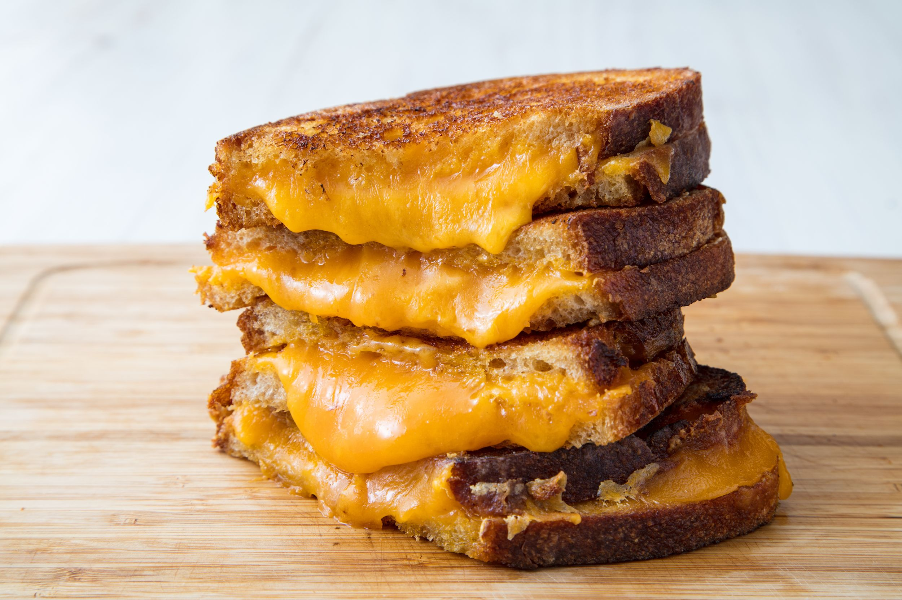

Best Grilled Cheese

The best grilled cheese you'll ever make
It's all about the crust. Choose a hearty bread, butter it up, and shred your
favorite cheddar for the best grilled cheese ever: crispy-crunchy on the outside,
melty, cheddar middle, and the world's most impressive cheese pull.
Ingredients
- Butter, softened, divided
- Sourdough bread
- Shredded cheddar
Steps
- Spread 1 tablespoon butter on one side of each slice of bread. With butter side down, top each slice of bread with about ½ cup cheddar.
- Cook until bread is golden and cheese is starting to melt, about 2 minutes.
- Flip one piece of bread on top of the other and continue to cook until cheese is melty, about 30 seconds more.
- Repeat for the second sandwich, wiping skillet clean if necessary.